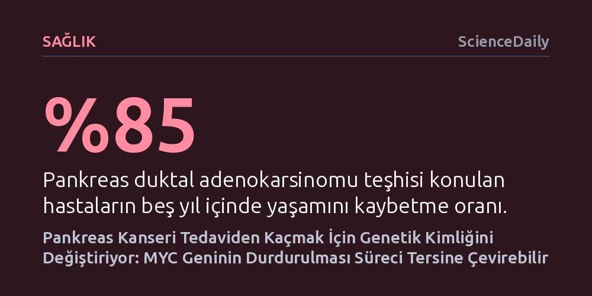

SAGLIK · ScienceDaily · 2026-10-26
Pankreas kanseri hücrelerinin genetik yapılarını dinamik biçimde değiştirerek daha saldırgan formlara dönüştüğü ve tedaviden kaçtığı, bu süreci yöneten MYC geninin baskılanmasıyla hücrelerin yeniden savunmasız kaldığı saptandı. Tek hücre düzeyinde yapılan analiz, tümörlerin bağışıklıktan kaçış yollarını haritalandırıyor.
Ölümcül pankreas kanserinin neden standart tedavilere hızla direnç kazandığını açıklayarak, tümör hücrelerinin genetik esnekliğini tersine çevirip hastalığı yeniden savunmasız kılmanın mümkün olduğunu kanıtlıyor.

Pankreas duktal adenokarsinomu, çağdaş onkolojinin tedavi edilmesi en güç ve en ölümcül hastalıklarından biri olmayı sürdürüyor. Teşhis konulan hastaların yaklaşık yüzde 85'i ilk beş yıl içinde yaşamını yitiriyor. Mevcut kemoterapi protokollerinin ve son yıllarda pek çok kanser türünde devrim yaratan immünoterapilerin pankreas tümörlerinde beklenen başarıyı gösterememesi, bu hastalığın tedaviye karşı inanılmaz bir direnç geliştirme ve hızla yayılma yeteneğinden kaynaklanıyor.
Bugüne kadar gerçekleştirilen standart kanser araştırmaları, tümör dokusunu büyük hücre kitleleri halinde topluca inceliyordu. Ancak milyonlarca hücrenin ortalamasını alan bu yaklaşım, tümörün içindeki kritik azınlıkları ve hücrelerin zamanla nasıl bir metamorfoz geçirdiğini görmeyi engelliyor, hastalığın saldırganlaşma adımlarının karanlıkta kalmasına yol açıyordu.
NYU Langone Health ve Perlmutter Kanser Merkezi bünyesindeki araştırmacılar, klasik yaklaşımın ötesine geçerek 56 hastadan alınan 62 tümördeki yaklaşık 450 bin tekil hücrenin genetik ifadesini tek tek haritalandırdı. Bu ayrıntılı inceleme, her bir pankreas tümörünün homojen bir kütle olmadığını; aksine bünyesinde genetik özellikleri ve davranışları birbirinden radikal biçimde ayrılan iki ila 11 farklı hücre klonu barındırdığını ortaya çıkardı.
Kemoterapi öncesinde ve sonrasında alınan hasta biyopsileri karşılaştırıldığında, tümörün hayatta kalma stratejisi netleşti: Kimi hücre klonları ilaçlara göğüs gerecek savunma zırhları geliştirirken, kimi klonlar çevre dokuları istila edip metastaz yapacak donanıma kavuşuyordu. Daha önce bilim dünyası pankreas kanseri hücrelerini 'klasik' (daha sakin) ve 'bazal' (agresif) olarak iki katı kategoriye ayırıyordu. Yeni bulgular, hücrelerin bu iki durum arasında akışkan biçimde kimlik değiştirebildiğini ilk kez kanıtladı.
Nature Genetics dergisinde yayımlanan çalışmanın en can alıcı bulgusu, bu tehlikeli kimlik değişiminin merkezinde MYC adı verilen genin durduğunu göstermesi oldu. En saldırgan bazal hücre popülasyonlarında olağanüstü yüksek bir faaliyet sergileyen MYC geni, tümör hücrelerinin hem tedaviye dirençli hem de yayılmacı bir karaktere bürünmesini tetikliyordu.
Araştırmacılar laboratuvar ortamında kritik bir müdahalede bulunarak bu agresif hücrelerdeki MYC geninin etkinliğini durdurdu. Elde edilen sonuç son derece çarpıcıydı: Saldırganlaşmış bazal hücreler geriye doğru bir dönüşüm geçirerek yeniden daha sakin ve kontrol edilebilir olan klasik forma geri döndü. Araştırmanın başyazarı Dr. Despoina Kalfakakou bu durumu şöyle özetliyor: "Bu bulgular, MYC de dahil olmak üzere tümör evriminin altında yatan mekanizmaları hedeflemenin, kanserin hızlı ilerlemesini dizginlemeye yardımcı olabileceğini gösteriyor."
Çalışmanın sağladığı bir diğer devrimsel açılım, pankreas kanserinin immünoterapiye neden yanıt vermediğini aydınlatması oldu. Hücresel haritalama, tümör hücrelerinin bağışıklık sisteminden gizlenmesine yardımcı olan TIGIT genini aşırı aktif hale getirirken, standart immünoterapi ilaçlarının hedef aldığı PD1 geninin etkinliğini belirgin şekilde düşürdüğünü gösterdi. Bu zıt kutupluluk, piyasadaki yaygın PD1 hedefli ilaçların pankreas kanserinde neden etkisiz kaldığını doğrudan açıklıyor.
Elde edilen veriler, pankreas kanserine karşı tek bir ilaca odaklanmak yerine tümörün genetik esnekliğini ve bağışıklıktan kaçış yollarını kapatacak çok yönlü tedavilerin gerekliliğini ortaya koyuyor. Şimdiden hem MYC hem de TIGIT proteinlerini hedef alan moleküller üzerinde klinik deneyler yürütülüyor. Tümörün evrimsel esnekliğini hedef almak, yakın gelecekte pankreas kanserini çaresiz bir tablo olmaktan çıkarıp kontrol edilebilir bir hastalığa dönüştürebilir.